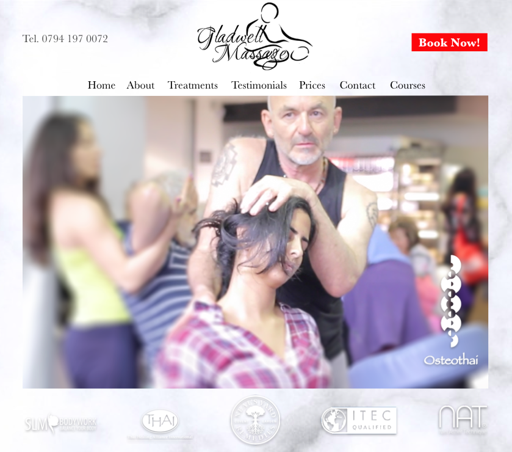
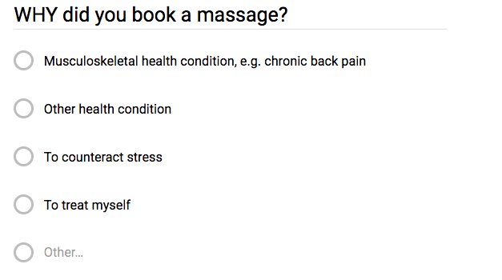
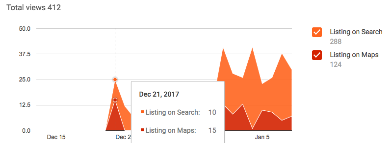
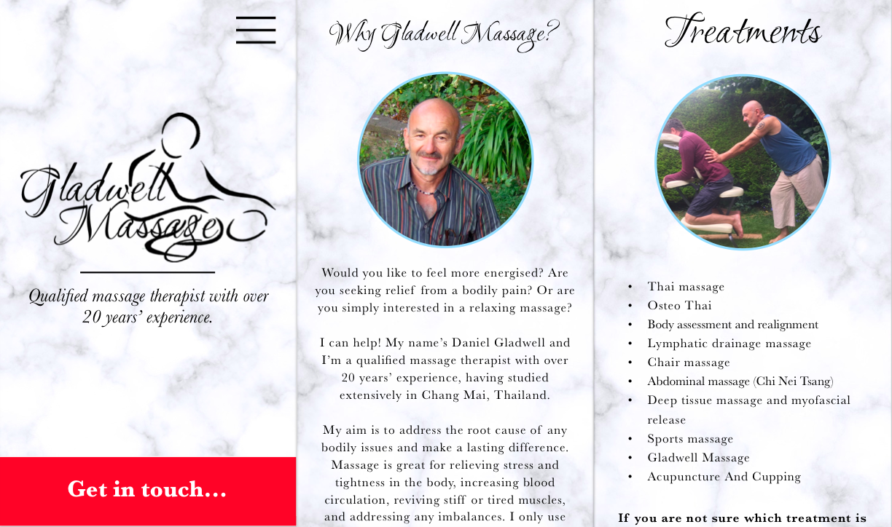

Gladwell Massage: website and branding
Client
Daniel Gladwell is a renowned masseur (whose services I wholeheartedly recommend), with over 20 years' international experience.
Brief
Investigate the user journey of booking a massage and reedesign Daniel's website accordingly.
Deliverables
Documented customer behaviour insights, mobile-friendly website designed and developed, redesigned logo and branding.
Process
We identified key user groups, developed user personas, and conducted a survey with people who have booked a massage or could be tempted. We asked WHEN, WHY, HOW, WHERE, and WHICH. Insights revealed that people value proximity, peer reviews, and the possibility to book quickly via their mobile device.
I designed a black and white interactive prototype for the new website which, following testing for user flow, is being given a lightly coloured, slightly whimsical, yet firm aesthetic.
The wireframes I am designing are super mobile-friendly, to encourage booking on the go. I also took the liberty of registering Gladwell Massage as a Google Business, which boosted website traffic by up to 50%, whilst highlighting proximity and encouraging more customer reviews.
Outcomes
The new website is still in the development phase, yet we are already seeing increased visits to the original website thanks to improving SEO via Google Business. This improvement was made as a result of user tests.
With the new designs, I am creating a website that is so mobile-friendly it looks like an app, giving a sense of personalisable luxury that users claim to associate with massage therapy.
Finally, users reported that the current logo is recognisable but "could be more exciting". I tried rearranging the typography to create a more passionate and dynamic emblem for Daniel's business.
I'm using: pencil and paper for rapid prototyping, Sketch, Photoshop, HTML, CSS, GitHub.